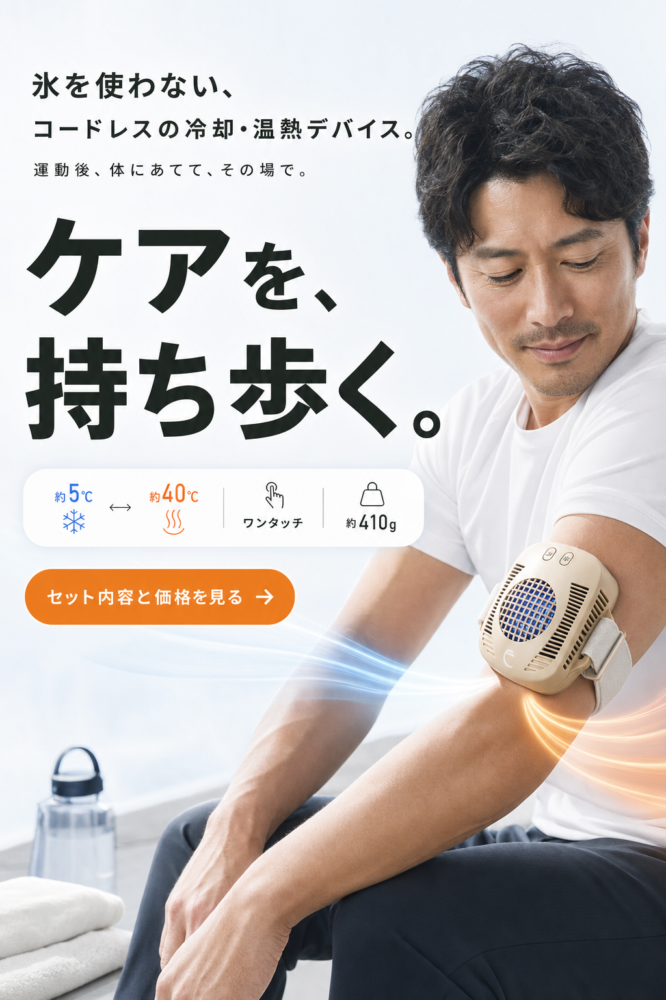
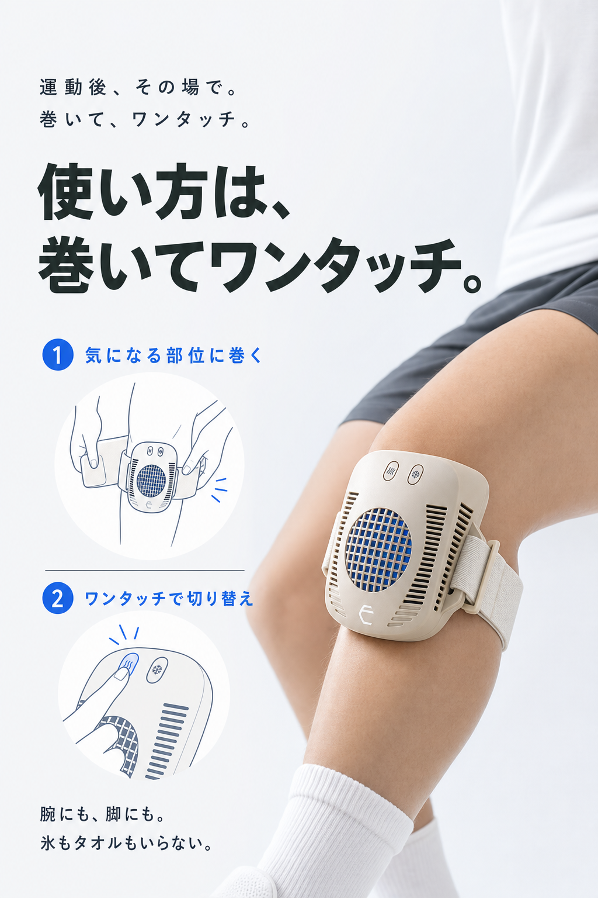
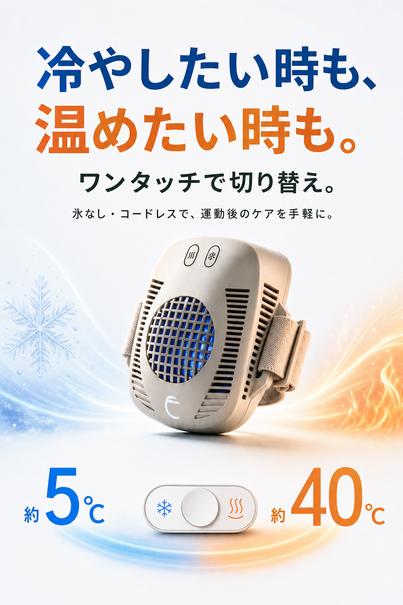
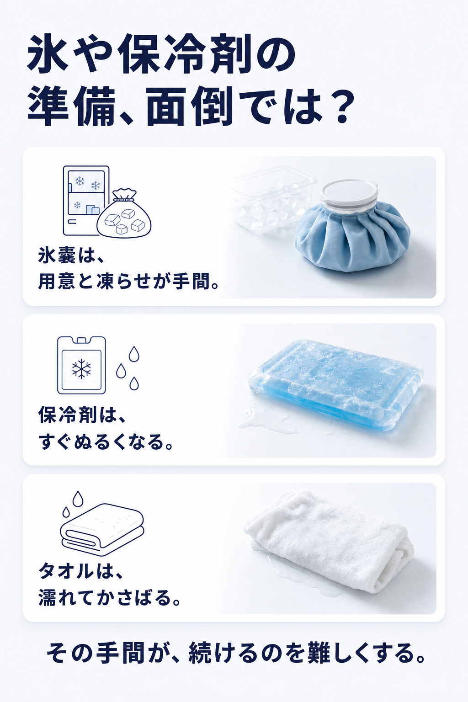
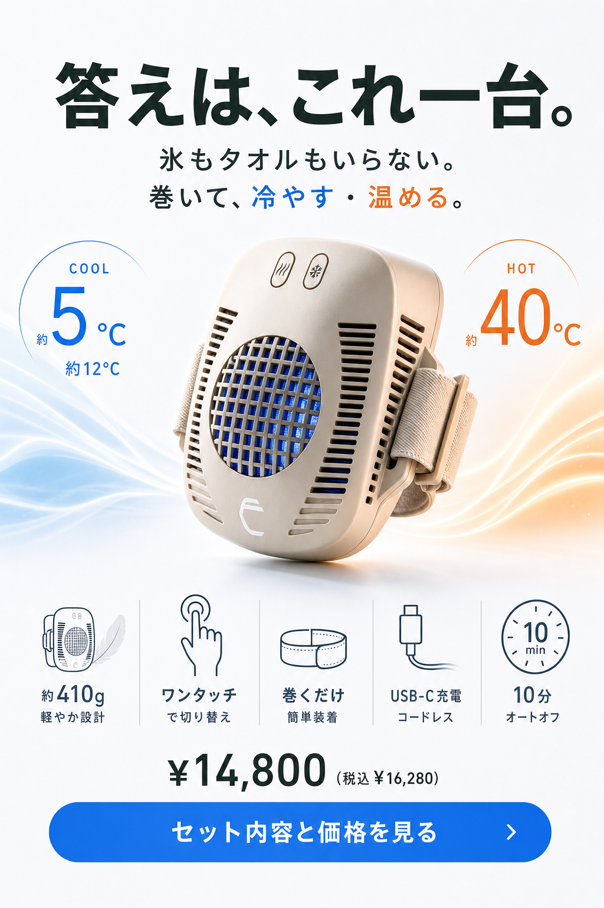
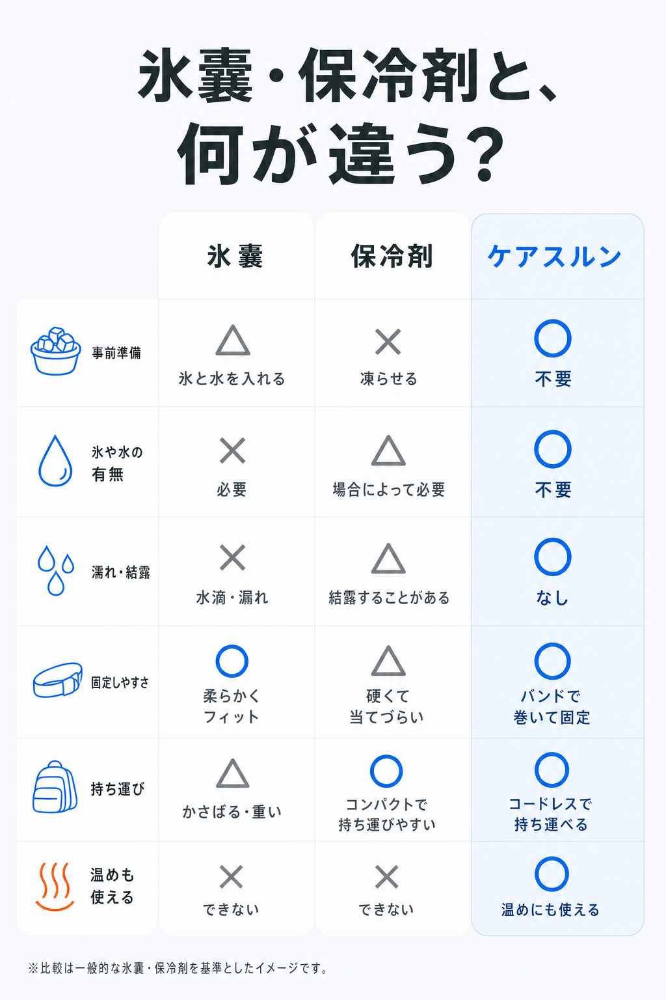
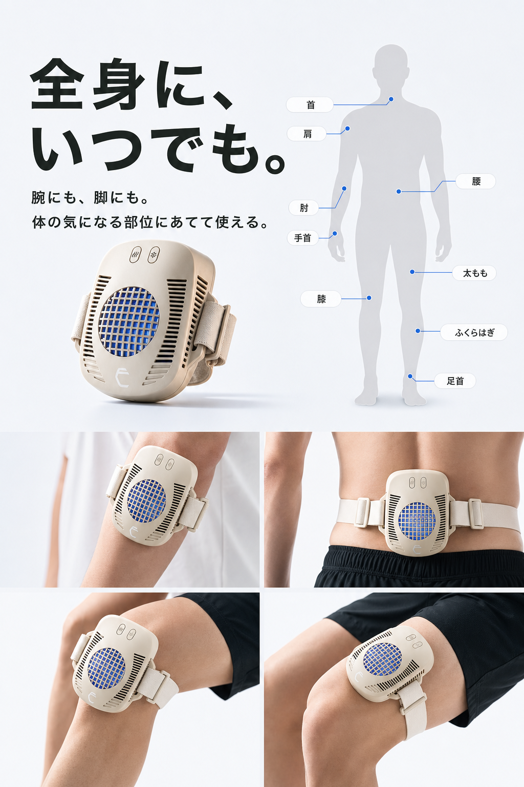
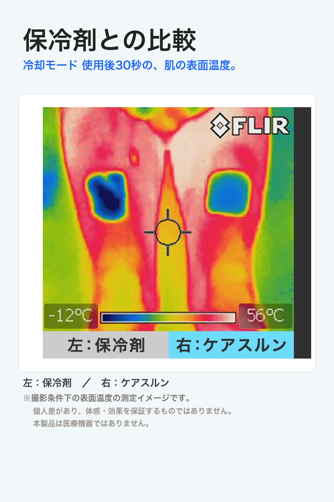
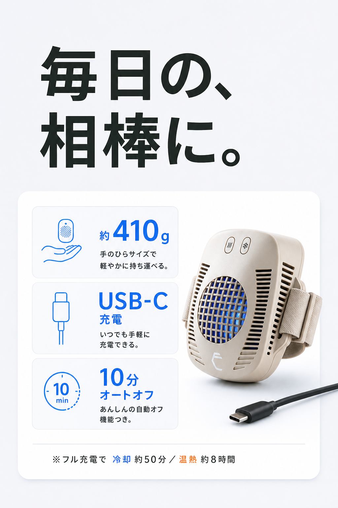
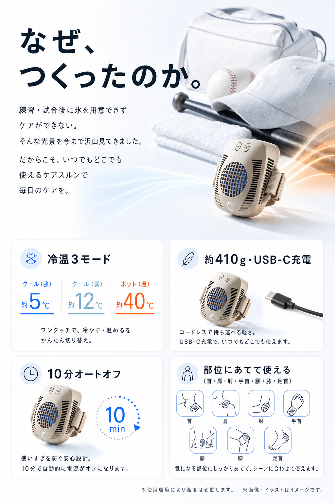
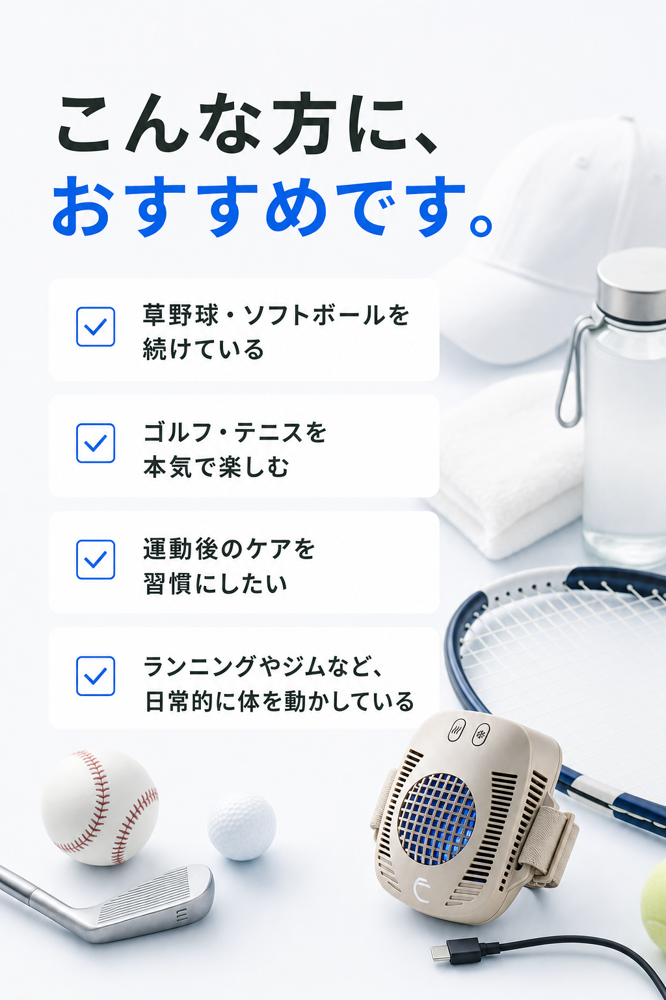
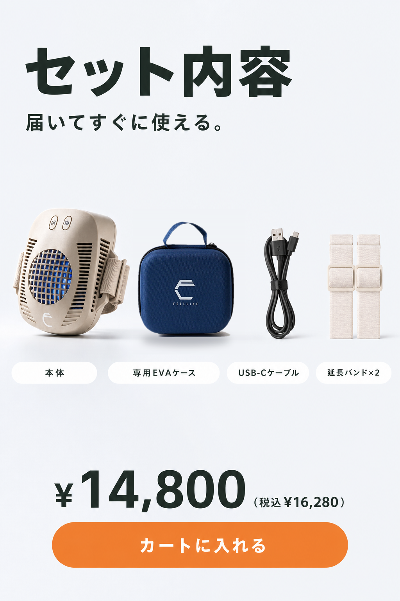
FAQ
よくある質問
氷と何が違いますか？
面倒な準備や後片付けが不要で、溶けません。冷却・温熱をワンタッチで切り替え、充電して繰り返し使えます。
冷たすぎませんか？
冷却は約5℃／約12℃の2段階です。長時間連続のご使用は付属説明書の注意に従ってください。
1回の充電でどれくらい使えますか？
冷却 約50分／温熱 約8時間使用可能です。（使用環境により変動）。
体のどこに使えますか？
首・肩・肘・手首・腰・膝・足首など。本体のバンドで巻いて固定できます。
充電方法は？
付属のType-Cケーブルを使用し充電してください（AC充電器別売り）。
延長バンドの取付方法は？
本体取付済みのバンドと延長バンドをマジックテープで接続してください。（本体取付済みのバンドを外す必要はありません）
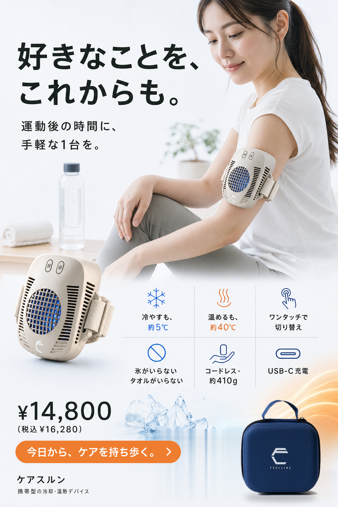